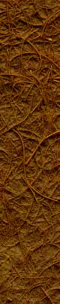

|
|
 |
 |
|
 |
|||
 |
|||
 |
|||
 |
|||



About the Artist
1980 - present: Self-employed studio artist and teacher
1999 - 2001: President, Chautauqua Center for the Visual Arts, Chautauqua,
NY
1991 - 1996: Teaching artist doing presentations to students, teachers and
school administrators, Aesthetic Education Institute, Rochester, NY
1986 -1990: Presentation Print series coordinator for Upstate N Y investment
firm
Prior to 1980: Commercial artist specializing in illustration/ layout work
for major U.S. shoe companies, St. Louis, MO
EDUCATION
BFA, Alfred University, Alfred, NY
Chautauqua (NY) Institution, art scholarships, assistantship
TEACHING / RESIDENCY PROJECTS
2001: "Horses On Parade", two-week residency demonstration,
The Children's School, Rochester, NY
2000, '01: "Writing on the Wall", presentations, workshops, and
exhibition through Castellani Art Museum at Niagara University, Lewiston-Porter
(NY) High School
1999/2000: "What Women Wear", Gender Studies Workshops, St. John Fisher
College, Rochester, NY
1996, '97: Slide presentations, workshops, School of Art, Syracuse
University, Syracuse, NY
1996: Slide presentation, mixed media workshops, College of Art & Design, Alfred
University, Alfred, NY
1992: "Building Bridges", presentation/workshop, Norman Howard School,
Rochester, NY
1991-1996: Presentations, workshops for public school students, teachers and
school administrators through the Aesthetic Education Institute, Rochester, NY,
for Monroe and surrounding counties
SELECTED PRESENTATIONS
2007: Slide lecture, Chautauqua Women’s Club, Chautauqua, NY
2004: Presentation/workshop, St. John Fisher College, Rochester, NY
2004, '05:
Presentation, Mercy High School, Rochester, NY
2004: Docent presentation,
Memorial Art Gallery, Rochester, NY
2004: Lecture,
Memorial Art Gallery, Rochester, NY
2003: Slide
presentation, Memorial Art Gallery, Rochester, NY
2002,'03: Slide presentations, Chautauqua Center for the Visual
Arts, Chautauqua, NY
2002: Slide presentation, Castellani Art Museum, Niagara
University, NY
2002: "The Grace Project", Castellani Museum, Niagara University,
NY; CCVA Galleries, Chautauqua, NY
2002: "Anchee Min", presentation for Rochester Arts & Lectures,
Barnes & Noble,
Rochester, NY
1999: "Paint & Pasta", Arts & Cultural Council of Greater Rochester
(NY), featured artist
1998:
Slide presentation, St. John Fisher College, Rochester, NY
1998: "Viewpoints Lecture", Memorial Art Gallery, Rochester, NY
1995: "Sound Bites" lecture series, Memorial Art Gallery, Rochester, NY
1992,'93: "Artist Speaks" lecture series, CAA Galleries , Chautauqua, NY
1991:
Docent presentation and workshop, Memorial Art Gallery, Rochester, NY
1991:
Installation presentation, CAA Galleries, Chautauqua, NY
1991:
Sculpture presentation, Arnot Art Museum, Elmira, NY
PUBLICATION
2005-present: CHAUTAUQUAN, articles for the Chautauqua Fund
2001: "Threads", a book by Ross Mackenzie, cover design and
illustrations
SELECTED EXHIBITIONS
2005: “Paper Trail”, invitational, Memorial
Art Gallery, Rochester, NY
2004: “1st Rochester Biennial”, 6-person invitational, Memorial
Art Gallery, Rochester, NY
2003: "ISC @ GFS", Juried, Grounds for Sculpture,
Hamilton, NJ
2003: "Domestic Rituals", Invitational, Kirkland
Art Center, Clinton, NY
2002: "The Politics of Identity", invitational exhibition, Nazareth
College, Rochester, NY
2002: "Grace", room-sized installation, Castellani Art Museum,
Niagara University, NY
2002: "The Journey", six-person exhibit, Rice Gallery, Albany Institute
of History and Art, Albany, NY
2002: "Chapters", solo exhibition, Art & Music Library, University
of Rochester, Rochester, NY
2001: "Fiber", invitational exhibition, Adams Gallery, Dunkirk, NY
2001: "Horses On Parade", painted fiberglass horse for Mid-Town Athletic
Club as part of city-wide project, Rochester, NY
1999: "Random & Deliberate; Chance & Choice", Installation, CCVA Galleries,
Chautauqua (Institution), NY
1986,'88,'92,'93, 94,'95,'99,'03:
"Rochester Finger Lakes Exhibition", Memorial Art Gallery of the University of
Rochester, Rochester, NY
1998,'99: "Chain Mail", installation, St. John Fisher & Nazareth Colleges,
Rochester, NY; CCVA Galleries, Chautauqua, NY
1998: "Upstate Invitational", Schweinfurth Memorial Art Center, Auburn, NY
1998: "Open Door Studio", Massaro collaborative installation, Memorial Art
Gallery, Rochester, NY
1998,2000: "Adam's Apple", Margolis video collaboration, Little Theater, Rochester,
NY
1998: "(un)natural occurrence", two-person exhibit, Foreman Gallery, Hartwick
College, Oneonta, NY
1998: "Rock, Scissors, Paper", five-woman exhibit, Tower Gallery, SUNY Brockport,
Brockport, NY
1997: "Clay, Fiber, Metal and Wood", Invitational, Schick Gallery, Skidmore
College, Saratoga Springs, NY
1997:
Two-person exhibition, George Waters Gallery, Elmira College, Elmira, NY
1997: "Forms of Abstraction", Invitational, Center at High Falls, Rochester,
NY
1997: "Chautauqua National Exhibition of American Art", Chautauqua, NY
1996: "Artists'Scrapbooks", Invitational, 171 Cedar Arts Center,
Corning, NY
1996:
`Regional Review', Six-person invitational, Forum Gallery, Jamestown (NY) Community
College
1996: "Ancient Structures", Invitational, Rice Gallery, Albany Institute of
History & Art, Albany, NY
1996: "Made In New York", Juried, Schweinfurth Memorial Art Center,
Auburn, NY
1995: "Into The Studio Work By And About Women", Director/Curatorial invitational,
Memorial Art Gallery, Rochester, NY
1994: "Chautauqua International For Fiber Art", juried, Adams Gallery, Dunkirk,
NY
1994: "AIR Show '94", invitational, Adams Gallery, Dunkirk, NY
1994: "Visions and Voices", 171 Cedar Arts Center, four-person exhibit, Corning,
NY
1993: Dawson Gallery, solo exhibition, Rochester, NY
1993: CAA Galleries, three- person exhibit, Chautauqua, NY
1993: "Dimensional Women/A Women Sculptors Invitational Exhibition" Lederer
Gallery, SUNY Geneseo NY
1993: Olean Public Gallery, solo exhibition, Olean, NY
1993: "X Sighting", invitational, Anderson Gallery, Buffalo, NY
1993: "Fibrous Extremities", invitational, Pyramid Arts Center, Rochester,
NY
1992: Craft Art from Western New York 1992", Burchfield Art Center,
Buffalo NY
1990, '91, '92: "The Seventh Generation", installation, Pyramid Arts Center,
Rochester, NY; CAA Galleries, Chautauqua, NY; Olean(NY) Public Gallery
1989, '91, '92: "Arnot Art Museum Regional Exhibit", Elmira, NY
1991: "Personal Territory", invitational traveling exhibit, Centre Gallery,
Olean, NY; Forum Gallery, Jamestown, NY; Burchfield Center, Buffalo, NY; Rice
Gallery, Albany, NY
1990: "Three Rivers Arts Festival", Sculpture exhibition (juror: Faith Ringgold),
PPG Wintergarden,
Pittsburgh, PA
1989-1990: "The Window Project", installation, Rundell Public Library, Rochester,
NY
1987-1990: Dawson Gallery Invitationals and Lamberton Conservatory Sculpture
Shows, Rochester,NY
1988: "Judith Gregory - Cast Paper Sculpture", Adams Art Gallery, Dunkirk,
NY
1988: "3D X 3", Key Corp Tower, three-person exhibit, Albany, NY
1987: "Invitational Fine Art Show", Rochester (NY) Institute of Technology
1987: "Tenth Anniversary Invitational Exhibit", Atrium Gallery, Rochester,
NY
1987-1991: "Tales in Tall Trees", invitational, Staten Island Children's Museum,
Staten Island,NY, traveled to
Children's Museum of the Canadian Museum of Civilization, Ottawa, Canada
1985, '86, '87: Village Gate Art Center, invitational exhibitions, Rochester,
NY
1986: "Housework", The Little Gallery, Nazareth College, solo exhibition, Rochester,
NY
1985: "Images of Jazz", invitational, Wilson Arts Center, Rochester, NY
1984: "Introspectives", national exhibition of autobiographical works
by women artists, (jurors: Alice Neel,
Lynn Gumbert), Pyramid Arts Center, Rochester, NY
1984: "Made in Rochester'", Schoharie County Arts Council Gallery, Cobleskill,
NY
1983: "Works on Paper", Elmira College, four-person exhibit, Elmira, NY